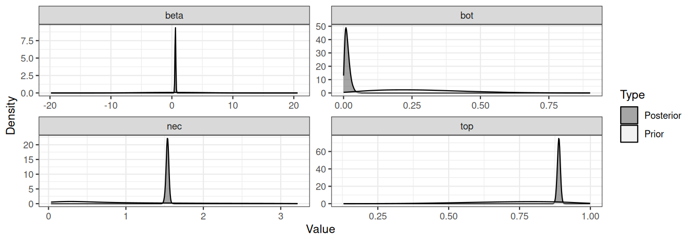
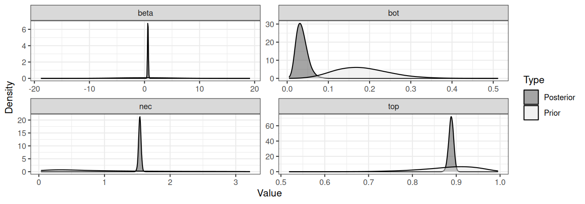
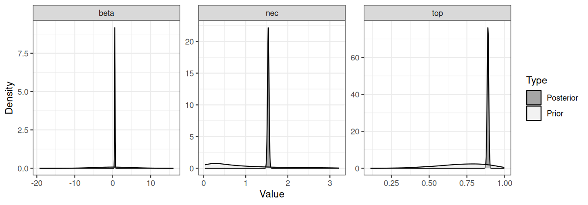

The main focus here is to explain the default priors used in
bayesnec and to showcase how the user can interrogate the
priors used in a bayesec model and alternatively specify
their own priors, should they wish to. This might be needed depending on
the model and the data because bayesnec tries to find
reasonable and yet only weakly informative priors for the model
parameters by default. First we describe the default priors used in
bayesnec, including the two alternative default prior sets
that can be selected through the prior_type argument, and
then follow up with a demonstration of how the user can specify priors
in multiple ways for objects of class bayesnecfit and
bayesmanecfit.
bayesnec
The default priors used in bayesnec can generally be
considered “weakly informative”. They are constructed for each parameter
of each model being fitted based on the characteristics of either the
input response and predictor data, depending on which is relevant to the
specific parameter scaling. In the case of parameters that scale with
the response, priors are constructed based on the relevant link scaling,
whether that be identity or the default (or user specific) link function
for a specific distribution. The priors are constructed by
bnec internally based on the chosen model, the distribution
(including the relevant link function), the predictor and the
response.
Only the parameters top and bot
scale specifically with the response. The priors described in this
section are the default "uninformative" set (see
Selecting the default prior set below for the
alternative "regularizing" set, which differs only in these
two response-scaled parameters). For Gaussian-distributed response data
(or any response data for which the link ensures valid values of the
response can take from +Inf to -Inf, including
log and logit) priors are normal
with a standard deviation of 2.5 times the standard
deivation of the response data, and a mean set at the 90th
and 10th quantiles for top and
bot respectively. For Poisson-, Negative Binomial- and
Gamma-distributed data the response is bounded by 0 and
thus priors are Gamma, with a mean scaled to correspond to
the 75th and 25th quantiles for
top and bot respectively. The mean is
linked mathematically to the shape (s) and rate parameters
(r) by the equation
with the Gamma shape parameter set at 2. For the Binomial, Beta, and
Beta Binomial families estimates for top and
bot must necessarily be constrained between
0 and 1 when modelled on the
"identity" link (the default in bayesnec).
Because of this constraint there is no need to adjust scaling based on
the response. bayesnec uses beta(5, 2) and
beta(2, 5) priors to provide a broad density centred across
the upper and lower 0 to 1 range for the
top and bot parameters,
respectively.
The parameters nec and ec50 scale
with respect to the predictor because both of these are parameters in
concentration-response curves that are estimated in units of
concentration. To stabilise model fitting the nec and
ec50 parameters are bounded to the upper and lower
observed range in the predictor, under the assumption that the range of
concentrations in the experiment was sufficient to cover the full range
of the response outcomes. Within those bounds the prior is a
normal distribution on the logarithm of the
predictor, which is the scale a dilution series is designed on. Where
the predictor is supplied on the concentration scale the prior is
written as a lognormal; where it spans negative values, and
has therefore already been log transformed by the user, it is written as
a normal. The two are the same rule stated on two
scales.
For a predictor supplied on the concentration scale, the mean of the
prior on the log scale is the median of the distinct positive
predictor values, logged. Distinct values are used rather than the
observations themselves so that the prior describes the series of
concentrations that was tested and not how many replicates each of them
received. Taking the median after logging returns the log of the median
concentration where the number of distinct positive concentrations is
odd, and the log of the geometric mean of the two central concentrations
where it is even, that being their midpoint on the log axis rather than
on the concentration axis. This places the maximum density of the prior
at that concentration measured on the log scale, and makes the median of
the untruncated prior on the concentration scale that same
concentration, which is the convention Fisher et al. (2024) describe.
Both statements describe the untruncated prior; truncation at the
highest concentration removes part of the upper tail and so pulls the
median down, to 0.58 against a median concentration of
0.88 on nec_data. The standard deviation is
set so that the central 95% interval of the untruncated prior covers
every concentration tested: it is the larger of the two half-widths from
the mean to the ends of the logged series, divided by
qnorm(0.975). A prior on a threshold should not exclude a
concentration the experiment applied, at either end, and that criterion
is the whole of the rule. The width is therefore stated rather than
chosen, and it adapts to the design: expressed as a multiple of
sd(log(x)) it lands between 0.73 and
1.18 across five designs, at 0.92 to
1.03 on the four nassarius series, and at
1.75 on nec_data, whose predictor is
continuous and densely sampled. Because the width is set by the two
extreme concentrations rather than by the spread of the series between
them, it responds to how a control is recorded. The prior is built from
the concentrations as recorded, so a control entered as a nominal small
positive value states that the value was applied and the prior widens to
cover it; on the nassarius contaminant A series the
standard deviation is 2.30 with the control recorded as
0, 2.59 with it recorded as 0.001
and 6.11 with it recorded as 1e-6. Record a
control as 0.
For a predictor supplied already logged, the prior is
normal with a mean at the median of the distinct predictor
values and a standard deviation of 10 times their standard
deviation. The multiplier of 10 is the one Fisher et
al. (2024) describe and it is unchanged. The mean and the standard
deviation are read from the distinct values rather than from the
observations, as on the concentration-scale branch, so that replication
has no effect on the prior; that part of the entry does differ from
earlier versions. Over the pooled
log(herbicide$concentration) column, 580 rows and 9
distinct values, the mean changes from 1.10 to
2.30 and the standard deviation from 26.3 to
31.5.
Up to version 2.1.4 the predictor-scaled prior took one of three
forms, selected by the range of the predictor: a Gamma
prior with shape 5 and rate 2 / m where the
predictor was non-negative and reached above 1, a fixed
beta(2, 2) where it lay within 0 and
1, and the normal prior above where it spanned
negative values. The rate was first corrected to 4 / m,
moving the maximum density of the Gamma prior from
2 * m to m (issue #273), before the entry was
replaced altogether. Both rates share a defect that no rate can remove.
The spread of a Gamma distribution is tied to its shape, so
gamma(5, 4 / m) places its central 95% interval at
0.41 * m to 2.56 * m whatever the data are,
and the prior therefore reaches the highest concentration tested only
where that concentration is within about 2.6 times the
median. That ratio is a property of the experimental design: it is
2.0 for a series spaced evenly from zero and between
13 and 125 for the four nassarius
series, which are spaced logarithmically as most ecotoxicological
designs are. No shape serves both, and the shape that would is not
usable. Solving for the shape whose maximum density is at m and
whose 97.5th percentile is the highest concentration gives
8.6 for a series spaced evenly from zero and
1.03 for the contaminant A series. At 1.03 the
mode is still at m, by construction, but that is all that is:
the density rises 5.7% from the lowest concentration to the
mode and then falls to 2.8% of its peak at the highest, and
the median of that prior is 3.85, twenty-four times
m and above every concentration tested but the top one. On a
response simulated from a nec4param curve with a known
NEC of 1.25 over the nassarius
contaminant A concentration series, the truncated prior placed only
1.2 parts in 10^9 of its mass above that
value, so the estimate was determined by the prior rather than by the
data, and the sampler reported no difficulty. Selecting on the range of
the predictor was a second defect: the range is a property of the units
a concentration is recorded in, so the same experiment received priors
differing roughly 600-fold in width according to whether the dose was
recorded in mg/L, in g/L, or logged: measured on the
nassarius contaminant A series, the central 95% interval
covered 1.7% of the predictor range under the
Gamma entry, 81% under beta(2, 2)
rescaled to that range and 1097% under the
normal entry before truncation. Both defects are removed by
using one construction on whichever scale the predictor is supplied on.
Note that the prior now used also has a monotonically decreasing density
on the concentration scale over the whole tested range of the
nassarius series. It is not the same defect: a
lognormal has its mode at exp(mu - sigma^2) on
the concentration scale, so the density falls because the change of
variable from the log scale redistributes it, and where the mass lies is
what separates the two. On the contaminant A series the median of the
untruncated prior used here is 0.223, which is the location
the rule specifies exactly; that series has an even number of positive
concentrations, so the location is the geometric mean of the two central
ones rather than one of the concentrations itself. The
shape-1.03 Gamma has a median of
3.85. See issue #302.
For the parameters beta, slope,
d and f, we first ensured any relevant
transformations in the model formula such that theoretical values of
-Inf to +Inf are allowable, and a
normal(0, 5) prior is used. For example, in the
nec3param model, beta is an
exponential decay parameter which must by definition be bounded to
0 and +Inf. Calling exp(beta) in
the model formula ensures the exponent meets these requirements. Note
also that a mean of 0 and standard deviation of
5 represents a relatively broad prior on the exponential
scaling. See the Model details vignette or
?model("all") for more information on all the models
available in bayesnec and their specific formulation.
A group-level term—ogl(), pgl(), or
(par | group), see ?bayesnecformula for the
syntax—adds a standard deviation for each parameter it applies to, and
ogl() adds an offset parameter as well. These are given
priors on the same three-way split as the parameters above: a
group-level standard deviation is given student_t(3, 0, s),
where s is one tenth of the observed range of the scale its
parameter lives on. That is the response range for top,
bot and ogl, the predictor range for
nec and ec50, and 0.5 for
beta, slope, d and
f, which are estimated on a log scale and take
normal(0, 5) of their own. Where the deviation is applied
multiplicatively, described below, it acts on a log or log-odds scale
rather than on the response scale, and s is converted onto that
scale at the mean of the response. The student_t(3, 0, .)
shape is the brms default for this class; only its scale,
which is not otherwise derived from the data, is changed. The
ogl offset itself is given a zero-centred
normal prior on the response scale, because it enters as an
offset on the whole curve and is therefore confounded with
top and bot unless it is centred.
Note that s is derived from the observed data, not from the
spread of the parameter’s own prior. The two are not the same, and the
difference is deliberate: top on a Gaussian response
has a prior standard deviation of 2.5 times that of the
response, which is a reasonable statement of ignorance about a
level and a poor one about deviation around that
level. For nec and ec50 the
distinction does not arise, since those priors are already truncated to
the observed predictor range. Under student_t(3, 0, s)
there is a prior probability of about 0.39 that the
group-level standard deviation exceeds s, so this is a weakly
informative prior rather than a tight one.
There is one property of the default priors that a grouped fit does
not inherit. Every prior described above constrains its parameter to the
region in which the model is defined—beta(5, 2) on
0 to 1, a lower bound of 0 for
the count and Gamma families, nec truncated to the
predictor range—and this is what allows bayesnec to fit on
the "identity" link and keep top,
bot and nec directly interpretable. A
group-level deviation cannot be constrained in the same way, because
brms declares it unconstrained. Where the response
distribution restricts the range of the mean—every family except
Gaussian, under an identity link—a proposal that carries the mean
outside that range is rejected by Stan and counted as a divergent
transition.
bayesnec now avoids this rather than mitigating it.
Where the deviation applies to the whole curve, through
ogl(), it is applied multiplicatively rather than
as an offset added to the mean: on a 0 to 1
response the deviation scales the odds of the mean, and on a positive
response it scales the mean itself. The deviation is centred on zero and
a deviation of zero leaves the curve exactly as it was, so
top, bot, nec and
beta keep their meanings, while the mean can no longer
leave its support however far a proposal travels. The prior on the
deviation is widened to match the scale it now acts on. Measured on a
simulated beta_binomial design across three seeds, this
gives no divergent transitions at all, against 70 to 95
per cent for the additive form on the same data, and it samples about
twice as fast.
The same construction is applied to a deviation placed on
top or bot, through pgl()
or an explicit (par | group) term. Those two parameters are
on the response scale and their own priors bound them to the support of
the mean, so an unconstrained deviation added to either of them can put
the parameter outside the region in which the likelihood is defined.
bot is where this occurs in practice, because it is the
lower asymptote and is routinely estimated close to zero. The parameter
itself keeps its name, its prior and its meaning; what the term now adds
is a deviation applied multiplicatively to it, with no population-level
term of its own, so the fit has exactly the parameters the additive form
had and bot remains the asymptote the population-level
curve declines towards. One consequence for a user supplying their own
priors: a prior on top or bot that
does not bound the parameter to the range the mean is defined on is
refused where a group-level term on it would be transformed, because the
multiplicative form is only defined inside that range. Measured on the
herbicide data with Beta(link = "identity")
and nec4param, two chains and 2000 iterations, a
(bot | herbicide) term gave 51 divergent transitions of
2000 at adapt_delta = 0.95 under the additive form and
gives none at Stan’s default of 0.8 under the
multiplicative one. The same term on a gaussian response,
where the mean is unconstrained and the parameter is therefore not
against a boundary, gave none either way.
A deviation on nec, ec50,
beta, slope, d or
f still adds to that parameter directly. Those
parameters are on the predictor scale or are estimated on a log scale,
so none of them is bounded by the likelihood and there is no excursion
to prevent; a (nec | herbicide) term on the fixture above
gave 0 divergent transitions of 2000 at adapt_delta = 0.8.
A pgl() term places a deviation on every parameter of the
equation at once and therefore generates a mixture of the two forms.
One restriction remains on ogl(). The transformation of
the mean is only defined where the mean is provably strictly
inside its range, so it is not used for neclin,
neclinhorme and ecxlin, whose mean is
unbounded below, nor for the hormesis equations, whose mean can reach or
exceed 1. The transformation of a parameter is not
restricted in that way, because top and
bot are bounded by their own priors whatever equation
they appear in.
bnec() sets
control = list(adapt_delta = 0.99) where a group-level term
can still take the mean outside its support, which reduces the
divergence rate substantially without removing it, and such a
fit should always be checked for divergent transitions. With
every deviation applied on a scale it cannot leave, that condition is
decided by the equation: for one whose mean lies between
bot and top no group-level term can
put the mean outside the support, and the setting is not made. It is
made for neclin, neclinhorme and
ecxlin, and for the hormesis equations, whose mean can
leave the support with every parameter inside it — on every family,
because an excess term in exp(slope) * x makes the mean
negative for a sufficiently negative predictor, and
crf(log(concentration), ...) supplies one as a matter of
course. An adapt_delta supplied by the user is left
unchanged. The setting is not made where it is not needed because it
requires roughly fourteen times the gradient evaluations per
iteration.
The priors described above are the default
"uninformative" set, which is deliberately broad and close
to truly uninformative. From version 2.1.3.2 bayesnec also
offers a narrower, more "regularizing" set, selected
through the prior_type argument of bnec (and
amend). The two sets differ in the response-scaled
top and bot parameters, and in the
group-level parameters described above; the predictor-scaled and fixed
priors are identical for both.
For the "regularizing" set the no-effect
top parameter is centred on the upper extreme
of the response data, which for the monotonically decreasing
concentration—response data typically modelled in bayesnec
corresponds to the control (no-exposure) mean, and bot
is centred on the lower extreme. The priors are also given less
dispersion than the "uninformative" set:
normal prior with a standard
deviation of one (rather than 2.5 times) the standard
deviation of the response, with means at the maximum and minimum of the
response for top and bot
respectively.Gamma prior with a shape of 5 (rather than
2) and a mean placed at the maximum and minimum of the
response for top and bot
respectively.beta(5, 1) and beta(1, 5) priors (rather than
beta(5, 2) and beta(2, 5)), pushing more
density towards the upper and lower ends of the 0 to
1 range."uninformative" set.
This is roughly the same degree of narrowing the response-scaled priors
receive above, and it exists because a user selecting the regularizing
set for a grouped fit is usually doing so because of the
grouping.These tighter priors can improve convergence and guard against
implausible fits when the data are sparse or noisy, at the cost of
exerting more influence on the posterior. The
"uninformative" priors of Fisher et al. (2024) remain the
default so that existing behaviour is preserved unless the regularizing
set is explicitly requested.
To see the difference we fit the same nec3param
model to the nec_data example (a Beta-distributed response
on the "identity" link) under each prior set. Note
prior_type is ignored whenever the user supplies their own
prior argument.
library(brms)
library(bayesnec)
data(nec_data)
set.seed(333)
exmp_uninformative <- bnec(y ~ crf(x, model = "nec3param"), data = nec_data,
family = Beta(link = "identity"),
prior_type = "uninformative",
iter = 1e4, control = list(adapt_delta = 0.99))
set.seed(333)
exmp_regularizing <- bnec(y ~ crf(x, model = "nec3param"), data = nec_data,
family = Beta(link = "identity"),
prior_type = "regularizing",
iter = 1e4, control = list(adapt_delta = 0.99))Comparing the priors that bnec built for each fit with
pull_prior shows the change in the response-scaled
top parameter: beta(5, 2) under the
default "uninformative" set versus beta(5, 1)
under "regularizing". The predictor-scaled
nec and fixed beta priors are
unchanged.
pull_prior(exmp_uninformative)
#> [[1]]
#> prior class coef group resp
#> normal(0, 5) b
#> normal(0, 5) b Intercept
#> lognormal(-0.132723577442522, 1.68292842267636) b
#> lognormal(-0.132723577442522, 1.68292842267636) b Intercept
#> beta(5, 2) b
#> beta(5, 2) b Intercept
#> gamma(0.01, 0.01) phi
#> dpar nlpar lb ub tag source
#> beta user
#> beta (vectorized)
#> nec 0.03234801324009 3.22051966293556 user
#> nec 0.03234801324009 3.22051966293556 (vectorized)
#> top 0 1 user
#> top 0 1 (vectorized)
#> 0 default
pull_prior(exmp_regularizing)
#> [[1]]
#> prior class coef group resp
#> normal(0, 5) b
#> normal(0, 5) b Intercept
#> lognormal(-0.132723577442522, 1.68292842267636) b
#> lognormal(-0.132723577442522, 1.68292842267636) b Intercept
#> beta(5, 1) b
#> beta(5, 1) b Intercept
#> gamma(0.01, 0.01) phi
#> dpar nlpar lb ub tag source
#> beta user
#> beta (vectorized)
#> nec 0.03234801324009 3.22051966293556 user
#> nec 0.03234801324009 3.22051966293556 (vectorized)
#> top 0 1 user
#> top 0 1 (vectorized)
#> 0 defaultPlotting the prior and posterior densities with
check_priors makes the difference in the
top prior clear: the "regularizing" prior
places more density at the upper end of the response range, closer to
the observed control mean.
check_priors(exmp_uninformative)
plot of chunk exmp3-checkpriors-uninformative
check_priors(exmp_regularizing)
plot of chunk exmp3-checkpriors-regularizing
There may be situations were the default bayesnec priors
to not behave as desired, or the user wants to provide informative
priors. For example the default priors may be too informative, yielding
unreasonably tight confidence bands, although this is only likely where
there are few data. Conversely, priors may be too vague, leading to poor
model convergence, or an inability of bayesnec to find
appropriate starting values. Alternatively, as indicated in the example
below, the default priors may be of the wrong statistical distribution
if there was insufficient information in the provided data for
bayesnec to guess correctly the appropriate one to use.
The priors used in the default model fit can be extracted using
pull_prior, and a sample or plot of prior values can be
obtained from the individual brms model fits through the
function sample_priors which samples directly from the
prior element in the brm model fit. We can
also use the function check_prior (based on the
hypothesis function of brms) to assess how the
posterior probability density for each parameter differs from that of
the prior.
To set specified priors, it is simplest to start by letting
bnec find the priors on its own, i.e. by not specifying the
brm argument prior at all.
library(brms)
library(bayesnec)
data(nec_data)
# a single model
set.seed(333)
exmp_a <- bnec(y ~ crf(x, model = "nec3param"), data = nec_data,
family = Beta(link = "identity"),
iter = 1e4, control = list(adapt_delta = 0.99))
class(exmp_a)
#> [1] "bayesnecfit" "bnecfit"We can view the prior and posterior probability densities of all the
parameters in the model using the function check_prior,
based on the hypothesis function of brms. This
can be useful to assess if priors are suitably vague, and/or if they
might be having an undesirable influence on the posterior.
check_priors(exmp_a)
plot of chunk exmp3-checkpriors
In this case the priors seem reasonably vague, however there will be
times when it is necessary to modify these priors. The user can take
advantage of the function pull_prior to inspect what
bnec came up with on its own, and decide how best to modify
those priors to be more desirable.
pull_prior(exmp_a)
#> [[1]]
#> prior class coef group resp
#> normal(0, 5) b
#> normal(0, 5) b Intercept
#> lognormal(-0.132723577442522, 1.68292842267636) b
#> lognormal(-0.132723577442522, 1.68292842267636) b Intercept
#> beta(5, 2) b
#> beta(5, 2) b Intercept
#> gamma(0.01, 0.01) phi
#> dpar nlpar lb ub tag source
#> beta user
#> beta (vectorized)
#> nec 0.03234801324009 3.22051966293556 user
#> nec 0.03234801324009 3.22051966293556 (vectorized)
#> top 0 1 user
#> top 0 1 (vectorized)
#> 0 defaultbnec chose a lognormal prior on the
NEC parameter of nec3param because the
predictor nec_data$x is non-zero positive, so the prior is
built on the log of the concentration. However, imagine that in theory
the predictor could have had negative values, it just happened to not
have in this particular dataset. So let’s go ahead and specify something
else, say a normal with larger variance.
set.seed(333)
my_prior <- c(prior_string("beta(5, 1)", nlpar = "top"),
prior_string("normal(1.3, 2.7)", nlpar = "nec"),
prior_string("gamma(0.5, 2)", nlpar = "beta"))
exmp_b <- bnec(y ~ crf(x, model = "nec3param"), data = nec_data,
family = Beta(link = "identity"), prior = my_prior,
iter = 1e4, control = list(adapt_delta = 0.99))Two things are of note. If the user is specifying their own priors,
bnec requires them to specify priors for
all parameters. The pull_prior function
shows the priors after the model was fitted, but suppose the
user does not know what parameters were comprised in a particular model.
In those instances, the user can call the function
show_params(model = "all") to inspect the parameters of
each function, or some targeted function in particular.
show_params(model = "nec3param")
#> [[1]]
#> y ~ top * exp(-exp(beta) * (x - nec) * step(x - nec))
#> top ~ 1
#> beta ~ 1
#> nec ~ 1The user can also specify a named list of priors when one or more models are being fitted to the same dataset.
set.seed(333)
my_priors <- list(nec3param = c(prior_string("beta(5, 1)", nlpar = "top"),
prior_string("normal(1.3, 2.7)", nlpar = "nec"),
prior_string("gamma(0.5, 2)", nlpar = "beta")),
nec4param = c(prior_string("beta(5, 1)", nlpar = "top"),
prior_string("normal(1.3, 2.7)", nlpar = "nec"),
prior_string("gamma(0.5, 2)", nlpar = "beta"),
prior_string("beta(1, 5)", nlpar = "bot")))
exmp_c <- bnec(y ~ crf(x, model = c("nec3param", "nec4param")), data = nec_data,
family = Beta(link = "identity"), prior = my_priors,
iter = 1e4, control = list(adapt_delta = 0.99))pull_prior also works for an object of class
bayesmanecfit, as does check_priors which
allows an option of passing a filename to save the prior and posterior
probability density plots to a pdf.
pull_prior(exmp_c)
check_priors(exmp_c, filename = "Check_priors")#> $nec3param
#> prior class coef group resp dpar nlpar lb ub tag source
#> gamma(0.5, 2) b beta user
#> gamma(0.5, 2) b Intercept beta (vectorized)
#> normal(1.3, 2.7) b nec user
#> normal(1.3, 2.7) b Intercept nec (vectorized)
#> beta(5, 1) b top user
#> beta(5, 1) b Intercept top (vectorized)
#> gamma(0.01, 0.01) phi 0 default
#>
#> $nec4param
#> prior class coef group resp dpar nlpar lb ub tag source
#> gamma(0.5, 2) b beta user
#> gamma(0.5, 2) b Intercept beta (vectorized)
#> beta(1, 5) b bot user
#> beta(1, 5) b Intercept bot (vectorized)
#> normal(1.3, 2.7) b nec user
#> normal(1.3, 2.7) b Intercept nec (vectorized)
#> beta(5, 1) b top user
#> beta(5, 1) b Intercept top (vectorized)
#> gamma(0.01, 0.01) phi 0 defaultThe user can also specify priors for one model only out of the entire
set, bayesnec will return a message stating that it is
searching for priors on its own when they are either ill-formed
(e.g. incomplete or have a typo), or the user simply decided not to
specify priors for a particular model, e.g.
set.seed(333)
my_priors <- list(nec3param = c(prior_string("beta(5, 1)", nlpar = "top"),
prior_string("normal(1.3, 2.7)", nlpar = "nec"),
prior_string("gamma(0.5, 2)", nlpar = "beta")),
nec4param = c(prior_string("beta(5, 1)", nlpar = "top"),
prior_string("normal(1.3, 2.7)", nlpar = "nec"),
prior_string("gamma(0.5, 2)", nlpar = "beta"),
prior_string("beta(1, 5)", nlpar = "bot")))
exmp_d <- bnec(y ~ crf(x, model = c("nec3param", "nec4param")), data = nec_data,
family = Beta(link = "identity"), prior = my_priors[1],
iter = 1e4, control = list(adapt_delta = 0.99))prior = my_priors[[1]] would also have worked because
the argument priors can either take a brmsprior object
directly, or a named list containing model-specific
brmsprior objects.
Finally the user can also extend an existing
bayesmanecfit object with the function amend,
also by specifying custom-built priors.
set.seed(333)
necsigm_priors <- c(prior_string("beta(5, 1)", nlpar = "top"),
prior_string("gamma(2, 6.5)", nlpar = "beta"),
prior_string("normal(1.3, 2.7)", nlpar = "nec"),
prior_string("normal(0, 2)", nlpar = "d"))
exmp_e <- amend(exmp_d, add = "necsigm", priors = necsigm_priors)A parameter can be held at a known value rather than estimated, by
giving it a constant() prior. This works wherever a
user-specified prior works and requires no other change.
bayesnec has no fixed argument of the kind
drc provides, because a point-mass prior expresses the same
thing through machinery that already exists.
The case where this is defensible is an asymptote that is structural rather than measured. In a two-choice avoidance assay, animals are offered a treated and an untreated container, and the expected proportion in the treated container at zero dose is 0.5 by design: at zero dose the two containers are identical.
set.seed(333)
avoid_x <- rep(c(0, 0.4, 0.8, 1.2, 1.6, 2.0, 2.4, 3.0), each = 6)
avoid_mu <- 0.5 * exp(-exp(0.3) * pmax(avoid_x - 1.1, 0))
avoid_data <- data.frame(x = avoid_x,
y = rbeta(length(avoid_x), avoid_mu * 60,
(1 - avoid_mu) * 60))get_priors returns the priors bnec would
generate for a formula and data without fitting anything, so the set can
be edited before the first run. Fixing top is a change to
one row.
fixed_prior <- get_priors(y ~ crf(x, model = "nec3param"), data = avoid_data,
family = Beta(link = "identity"))
fixed_prior$prior[fixed_prior$nlpar == "top"] <- "constant(0.5)"
fixed_prior
#> prior class coef group resp dpar
#> normal(0, 5) b
#> constant(0.5) b
#> lognormal(0.470003629245736, 0.707306038302134) b
#> nlpar lb ub tag source
#> beta <NA> <NA> user
#> top 0 1 user
#> nec 0 3 user
set.seed(333)
exmp_f <- bnec(y ~ crf(x, model = "nec3param"), data = avoid_data,
family = Beta(link = "identity"), prior = fixed_prior,
iter = 1e4, control = list(adapt_delta = 0.99))top is reported with an estimate of exactly 0.5 and no
error, because it was never sampled. Stan does not declare a parameter
whose prior is constant, so it contributes nothing to the posterior.
fixef(pull_brmsfit(exmp_f))
#> Estimate Est.Error Q2.5 Q97.5
#> beta_Intercept 0.3046734 0.09441713 0.1430319 0.542110
#> nec_Intercept 1.1396885 0.07174540 1.0234336 1.323081
#> top_Intercept 0.5000000 0.00000000 0.5000000 0.500000Two things are given up, and both are easy to miss because the fit itself looks better rather than worse.
The first is a diagnostic. In the assay above, 0.5 is a null
expectation rather than a design constant: it holds only if there
is no baseline preference between the two containers arising from
position, lighting, handling order or substrate. Fitting the same data
with top free gives a credible interval that comfortably
covers 0.5, and that is positive evidence the assay was unbiased before
the contaminant was involved. No other output of the model carries
it.
set.seed(333)
exmp_g <- bnec(y ~ crf(x, model = "nec3param"), data = avoid_data,
family = Beta(link = "identity"), iter = 1e4,
control = list(adapt_delta = 0.99))
fixef(pull_brmsfit(exmp_g))
#> Estimate Est.Error Q2.5 Q97.5
#> top_Intercept 0.4885838 0.01631940 0.4568980 0.5210170
#> beta_Intercept 0.3451862 0.11206883 0.1543009 0.5852214
#> nec_Intercept 1.1919980 0.09776449 1.0351256 1.3855128That check only works while top is free, and here it
passes: the interval covers 0.5, so this assay was unbiased at dose
zero. The point is what it would have cost to be unable to ask. Had the
assay carried a real baseline preference — a top genuinely
near 0.62 — fixing it at 0.5 would have produced a fit that looked
exactly as sound as this one. The disagreement does not disappear when
it is forbidden from appearing in top; it is absorbed into
beta and nec instead, and so into the toxicity
estimate, with intervals that no longer reflect it. Whatever value is
asserted for top propagates into the NEC directly,
which is visible even here, where 0.5 is the value the data were
generated from.
rbind(fixed = nec(exmp_f), free = nec(exmp_g))
#> Q50 Q2.5 Q97.5
#> fixed 1.128614 1.023434 1.323081
#> free 1.168571 1.035126 1.385513The second is uncertainty. A constant asserts the value is known exactly, so none of it propagates into ECx or the NEC, and the credible intervals narrow. That reads as a better analysis and is the opposite.
A tight informative prior is therefore the better tool in most cases,
because it states what is known while still letting the data move the
parameter and still carrying the uncertainty forward.
beta(6, 6) has a mean of 0.5 and a standard deviation of
0.14, concentrating top around the design expectation
without asserting it.
fixed_prior$prior[fixed_prior$nlpar == "top"] <- "beta(6, 6)"A response divided by its control mean has a maximum of 1 by
construction, and fixing top at 1 is a common reflex. It
should be resisted, for a reason beyond the two above. Normalising to an
estimated control already discards the sampling variability of
the divisor; fixing the asymptote afterwards makes that loss invisible
rather than merely present, because the intervals it narrows are the
ones that were already too narrow. bnec warns when it
detects a normalised response. See the “Preparing the response” section
of vignette("example1") and ?bnec for the
alternative, which is to model the raw response and read the decline
relative to the fitted control.